EXERCISE1
Chapter 6: Exercise 6.1
1. Fill in the blanks using the correct word given in brackets:
(i) All circles are ___ (congruent, similar)
All circles have the same shape but different sizes.
All circles are similar.
(ii) All squares are ___ (similar, congruent)
All squares have equal angles (90°) and proportional sides.
All squares are similar.
(iii) All ___ triangles are similar. (isosceles, equilateral)
Equilateral triangles always have angles of 60°.
All equilateral triangles are similar.
(iv) Two polygons of the same number of sides are similar, if (a) their corresponding
angles are ___ as and (b) their corresponding sides are ___. (equal, proportional)
For similarity, angles must be equal and sides must be proportional.
Two polygons are similar if corresponding angles are equal and corresponding sides are
proportional.
2. Give two different examples of pair of:
(i) Similar figures
1. Two equilateral triangles of sides 2 cm and 5 cm.
2. Two squares of sides 3 cm and 4 cm.
Any two circles, any two squares.
(ii) Non-similar figures
1. A square and a rectangle (Angles are 90°, but sides may not be
proportional).
2. A triangle and a trapezium (Different shapes).
A square and a rhombus; A circle and a triangle.

3. State whether the following quadrilaterals are similar or not:
Quadrilateral PQRS (Rhombus with side 1.5 cm).
Quadrilateral ABCD (Square with side 3 cm).
Whether PQRS ~ ABCD.
Comparing corresponding sides:
PQAB = 1.53 = 12
QRBC = 1.53 = 12
RSCD = 1.53 = 12
SPDA = 1.53 = 12
Sides are proportional.
Comparing corresponding angles:
Angles of ABCD are 90°.
Angles of PQRS are NOT 90°.
Corresponding angles are not equal.
No, the quadrilaterals are not similar.
EXERCISE2
Chapter 6: Exercise 6.2
1. In Fig., DE || BC. Find EC in (i) and AD in (ii).
(i)
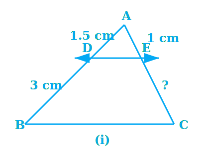
AD = 1.5 cm, DB = 3 cm, AE = 1 cm.
DE || BC.
Length of EC.
Since DE || BC, by Basic Proportionality Theorem (BPT):
ADDB = AEEC
Substituting values:
1.53 = 1EC
12 = 1EC
EC = 2 cm.
EC = 2 cm.
(ii)
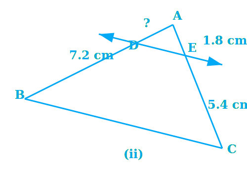
DB = 7.2 cm, AE = 1.8 cm, EC = 5.4 cm.
DE || BC.
Length of AD.
By BPT: ADDB = AEEC
AD7.2 = 1.85.4
AD7.2 = 13
AD = 7.23 = 2.4 cm.
AD = 2.4 cm.
2. E and F are points on sides PQ and PR respectively of a ∆ PQR. For each of the
following cases, state whether EF || QR.
(i) PE = 3.9 cm, EQ = 3 cm, PF = 3.6 cm and FR = 2.4 cm.
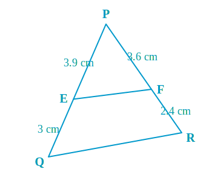
PE = 3.9 cm, EQ = 3 cm, PF = 3.6 cm, FR = 2.4 cm.
If EF || QR.
Ratio 1: PEEQ = 3.93 = 1.3
Ratio 2: PFFR = 3.62.4 = 1.5
Since 1.3 ≠ 1.5, the sides are not divided in the same ratio.
No, EF is not parallel to QR.
(ii) PE = 4 cm, QE = 4.5 cm, PF = 8 cm and RF = 9 cm.
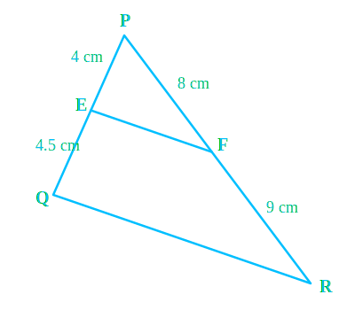
PE = 4 cm, QE = 4.5 cm, PF = 8 cm, RF = 9 cm.
If EF || QR.
Ratio 1: PEQE = 44.5 = 4045 = 89
Ratio 2: PFRF = 89
Since ratios are equal PEQE = PFRF.
By Converse of Basic Proportionality Theorem (Converse of BPT):
Yes, EF || QR.
(iii) PQ = 1.28 cm, PR = 2.56 cm, PE = 0.18 cm and PF = 0.36 cm.
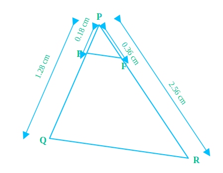
EQ = PQ - PE = 1.28 - 0.18 = 1.10 cm.
FR = PR - PF = 2.56 - 0.36 = 2.20 cm.
Ratio 1: PEEQ = 0.181.10 = 955
Ratio 2: PFFR = 0.362.20 = 955
Ratios are equal. By Converse of BPT:
Yes, EF || QR.
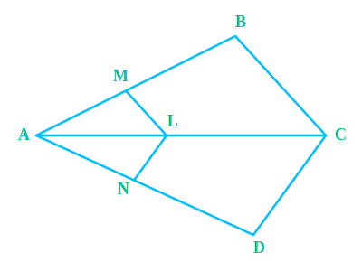
3. In Fig., if LM || CB and LN || CD, prove that AMAB = ANAD.
LM || CB and LN || CD.
AMAB = ANAD
In ∆ ABC, LM || CB. By BPT (Corollary):
AMAB = ALAC ...(1)
In ∆ ADC, LN || CD. By BPT (Corollary):
ANAD = ALAC ...(2)
From (1) and (2), comparing RHS:
AMAB = ANAD
Hence Proved.
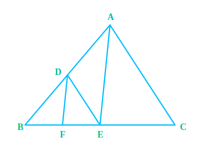
4. In Fig., DE || AC and DF || AE. Prove that BFFE = BEEC.
In ∆ ABC, DE || AC and DF || AE.
BFFE = BEEC
In ∆ ABC, DE || AC. By BPT:
BDDA = BEEC ...(1)
In ∆ ABE, DF || AE. By BPT:
BDDA = BFFE ...(2)
From (1) and (2), comparing LHS:
BFFE = BEEC
Hence Proved.
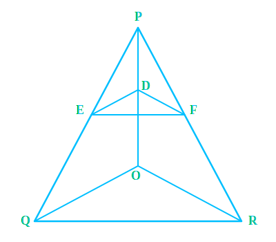
5. In Fig., DE || OQ and DF || OR. Show that EF || QR.
DE || OQ and DF || OR.
EF || QR.
In ∆ PQO, DE || OQ. By BPT:
PEEQ = PDDO ...(1)
In ∆ POR, DF || OR. By BPT:
PFFR = PDDO ...(2)
From (1) and (2):
PEEQ = PFFR
In ∆ PQR, since the sides PQ and PR are divided in the same ratio:
By Converse of BPT:
EF || QR.
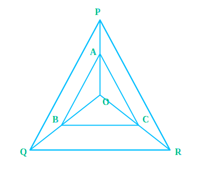
6. In Fig., A, B and C are points on OP, OQ and OR respectively such that AB || PQ and AC
|| PR. Show that BC || QR.
Points A, B, C on OP, OQ, OR. AB || PQ and AC || PR.
BC || QR.
In ∆ OPQ, AB || PQ. By BPT:
OAAP = OBBQ ...(1)
In ∆ OPR, AC || PR. By BPT:
OAAP = OCCR ...(2)
From (1) and (2):
OBBQ = OCCR
In ∆ OQR, points B and C divide sides OQ and OR in the same ratio.
By Converse of BPT:
BC || QR.
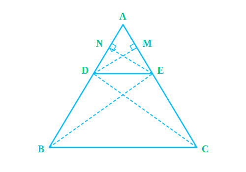
7. Using Theorem 6.1 (BPT), prove that a line drawn through the mid-point of one side of a
triangle parallel to another side bisects the third side.
∆ ABC, D is midpoint of AB (AD = DB). Line DE || BC intersecting AC at E.
E is midpoint of AC (AE = EC).
By BPT, since DE || BC:
ADDB = AEEC
Since AD = DB, ADDB = 1.
Therefore, 1 = AEEC
AE = EC.
Hence, E bisects AC.
8. Using Theorem 6.2 (Converse BPT), prove that the line joining the mid-points of any two
sides of a triangle is parallel to the third side.
∆ ABC, D is midpoint of AB (AD = DB), E is midpoint of AC (AE = EC).
DE || BC.
Ratio 1: ADDB = 1 (Since AD=DB)
Ratio 2: AEEC = 1 (Since AE=EC)
Since ADDB = AEEC, by Converse of BPT:
DE || BC.
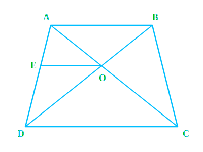
9. ABCD is a trapezium in which AB || DC and its diagonals intersect each other at the
point O. Show that AOBO = CODO.
Trapezium ABCD with AB || DC. Diagonals AC and BD intersect at O.
AOBO = CODO
Draw a line EO || DC passing through O and meeting AD at E.
In ∆ ADC, EO || DC. By BPT:
AEED = AOCO ...(1)
Since AB || DC and EO || DC, then EO || AB.
In ∆ ADB, EO || AB. By BPT:
EDAE = DOBO
Taking reciprocal: AEED = BODO ...(2)
From (1) and (2):
AOCO = BODO
Rearranging terms:
AOBO = CODO
Hence Proved.
10. The diagonals of a quadrilateral ABCD intersect each other at the point O such that
AOBO = CODO. Show that
ABCD is a trapezium.
Quadrilateral ABCD, diagonals intersect at O, AOBO = CODO.
ABCD is a trapezium (i.e., AB || DC).
Draw line EO || AB meeting AD at E.
In ∆ DAB, EO || AB. By BPT:
AEED = BODO ...(1)
Given: AOBO = CODO
Rearranging: AOCO = BODO ...(2)
From (1) and (2):
AEED = AOCO
In ∆ ADC, points E and O divide sides AD and AC in the same ratio.
By Converse of BPT, EO || DC.
But by construction, EO || AB.
Since EO is parallel to both AB and DC, therefore AB || DC.
Since one pair of opposite sides is parallel, ABCD is a trapezium.
Hence Proved.
EXERCISE3
Chapter 6: Exercise 6.3
1. State which pairs of triangles in Fig. are similar. Write the similarity criterion used
by you for answering the question and also write the pairs of similar triangles in the symbolic form.
(i) ∆ABC (Angles 60, 80, 40) and ∆PQR (Angles 60, 80, 40)

∠A = ∠P = 60°
∠B = ∠Q = 80°
∠C = ∠R = 40°
Corresponding angles are equal.
By AAA Similarity Criterion (AAA Similarity):
∆ABC ~ ∆PQR
(ii) ∆ABC (Sides 2, 3, 2.5) and ∆PQR (Sides 6, 5, 4)
ABQR = 24 = 12
BCRP = 2.55 = 12
CAPQ = 36 = 12
Sides are proportional. By SSS Similarity Criterion (SSS
Similarity):
∆ABC ~ ∆QRP
(iii) ∆LMP (Sides 2.7, 3, 2) and ∆DEF (Sides 5, 6, 4)
MPDE = 24 = 12
LPDF = 36 = 12
LMEF = 2.75 ≠ 12
Sides are not proportional.
Not similar.
(iv) ∆MNL (M=70, MN=2.5, ML=5) and ∆PQR (Q=70, PQ=5, QR=10)
MNPQ = 2.55 = 12
MLQR = 510 = 12
Included Angle M = Angle Q = 70°.
By SAS Similarity Criterion (SAS Similarity):
∆MNL ~ ∆PQR
(v) ∆ABC (A=80, AB=2.5, BC=3) and ∆DEF (F=80, DF=5, EF=6)
ABDF = 2.55 = 12
BCEF = 36 = 12
Angle A = 80°. Angle F = 80°.
However, Angle A is not included between AB and BC. Angle F is included between DF and EF.
The condition for SAS is not satisfied.
Not similar.
(vi) ∆DEF (D=70, E=80) and ∆PQR (Q=80, R=30)
In ∆DEF, ∠F = 180° - (70° + 80°) = 30° (Angle Sum Property).
In ∆PQR, ∠P = 180° - (80° + 30°) = 70° (Angle Sum Property).
∠D = ∠P = 70°
∠E = ∠Q = 80°
∠F = ∠R = 30°
By AAA Similarity Criterion (AAA Similarity):
∆DEF ~ ∆PQR
2. In Fig., ∆ODC ~ ∆OBA, ∠BOC = 125° and ∠CDO = 70°. Find ∠DOC, ∠DCO and ∠OAB.
∆ODC ~ ∆OBA, ∠BOC = 125°, ∠CDO = 70°.
∠DOC, ∠DCO and ∠OAB.
∠DOC + ∠BOC = 180° (Linear Pair)
∠DOC + 125° = 180° ⇒ ∠DOC = 55°
In ∆ODC: ∠DCO + ∠CDO + ∠DOC = 180° (Angle Sum Property)
∠DCO + 70° + 55° = 180°
∠DCO = 180° - 125° = 55°
Since ∆ODC ~ ∆OBA, corresponding angles are equal.
∠OAB = ∠OCD (Corresponding parts of similar triangles)
So, ∠OAB = 55°
∠DOC = 55°, ∠DCO = 55°, ∠OAB = 55°.
3. Diagonals AC and BD of a trapezium ABCD with AB || DC intersect each other at the point
O. Using a similarity criterion for two triangles, show that OAOC = OBOD.
Trapezium ABCD, AB || DC. Diagonals intersect at O.
OAOC = OBOD
In ∆OAB and ∆OCD:
AB || DC (Given)
∠OAB = ∠OCD (Alternate Interior Angles)
∠OBA = ∠ODC (Alternate Interior Angles)
By AA Similarity Criterion (AA Similarity):
∆OAB ~ ∆OCD
Corresponding sides are proportional:
OAOC = OBOD
Hence Proved.
4. In Fig., QRQS = QTPR and ∠1 = ∠2. Show that ∆PQS ~ ∆TQR.
QRQS = QTPR and ∠1 = ∠2.
∆PQS ~ ∆TQR.
In ∆PQR: ∠1 = ∠2 (i.e., ∠PQR = ∠PRQ).
So PQ = PR (Sides opposite to equal angles are equal).
Given: QRQS = QTPR
Substitute PR = PQ:
QRQS = QTPQ
Invert both sides: \n QSQR = PQQT
Now in ∆PQS and ∆TQR:
PQQT = QSQR
∠PQS = ∠TQR (= ∠1) is common.
By SAS Similarity Criterion (SAS Similarity):
∆PQS ~ ∆TQR.
5. S and T are points on sides PR and QR of ∆ PQR such that ∠P = ∠RTS. Show that ∆RPQ ~
∆RTS.
∆PQR with points S on PR, T on QR such that ∠P = ∠RTS.
∆RPQ ~ ∆RTS.
In ∆RPQ and ∆RTS:
∠R is common (Common Angle).
∠RPQ = ∠RTS (Given).
By AA Similarity Criterion (AA Similarity):
∆RPQ ~ ∆RTS.
6. In Fig., if ∆ABE ≅ ∆ACD, show that ∆ADE ~ ∆ABC.
∆ABE ≅ ∆ACD.
∆ADE ~ ∆ABC.
Since ∆ABE ≅ ∆ACD (Given):
AB = AC (CPCT)
AE = AD (CPCT) ⇒ AD = AE
Divide equations: ADAB = AEAC
In ∆ADE and ∆ABC:
ADAB = AEAC
∠DAE = ∠BAC (Common Angle)
By SAS Similarity Criterion (SAS Similarity):
∆ADE ~ ∆ABC.
7. In Fig., altitudes AD and CE of ∆ ABC intersect each other at the point P. Show that:
(i) ∆AEP ~ ∆CDP
∠AEP = ∠CDP = 90° (Altitudes)
∠APE = ∠CPD (Vertically Opposite Angles)
By AA Similarity:
∆AEP ~ ∆CDP.
(ii) ∆ABD ~ ∆CBE
∠ADB = ∠CEB = 90° (Altitudes)
∠ABD = ∠CBE (Common Angle B)
By AA Similarity:
∆ABD ~ ∆CBE.
(iii) ∆AEP ~ ∆ADB
∠AEP = ∠ADB = 90° (Altitudes)
∠PAE = ∠BAD (Common Angle A)
By AA Similarity:
∆AEP ~ ∆ADB.
(iv) ∆PDC ~ ∆BEC
∠PDC = ∠BEC = 90° (Altitudes)
∠PCD = ∠BCE (Common Angle C)
By AA Similarity:
∆PDC ~ ∆BEC.
8. E is a point on the side AD produced of a parallelogram ABCD and BE intersects CD at F.
Show that ∆ABE ~ ∆CFB.
Parallelogram ABCD. E on AD produced. BE intersects CD at F.
∆ABE ~ ∆CFB.
In Parallelogram ABCD, ∠A = ∠C (Opposite angles of parallelogram).
AE || BC. So ∠AEB = ∠CBF (Alternate Interior Angles).
In ∆ABE and ∆CFB:
∠A = ∠C
∠AEB = ∠CBF
By AA Similarity Criterion (AA Similarity):
∆ABE ~ ∆CFB.
9. In Fig., ABC and AMP are two right triangles, right angled at B and M respectively.
Prove that:
(i) ∆ABC ~ ∆AMP
In ∆ABC and ∆AMP:
∠ABC = ∠AMP = 90° (Given)
∠BAC = ∠MAP (Common Angle A)
By AA Similarity Criterion (AA Similarity):
∆ABC ~ ∆AMP.
(ii) CAPA = BCMP
Since ∆ABC ~ ∆AMP (Proved above):
Corresponding sides are proportional.
CAPA = BCMP
Hence Proved.
10. CD and GH are respectively the bisectors of ∠ACB and ∠EGF such that D and H lie on
sides AB and FE of ∆ABC and ∆EFG respectively. If ∆ABC ~ ∆FEG, show that:
(i) CDGH = ACFG
∆ABC ~ ∆FEG. CD bisects ∠C, GH bisects ∠G.
Since ∆ABC ~ ∆FEG:
∠A = ∠F (Corresponding Angles).
∠C = ∠G (Corresponding Angles).
Since CD and GH are bisectors:
∠ACD = 12 ∠C and ∠FGH = 12 ∠G.
So ∠ACD = ∠FGH.
In ∆ACD and ∆FGH:
∠A = ∠F
∠ACD = ∠FGH
By AA Similarity (AA Similarity):
∆ACD ~ ∆FGH
So CDGH = ACFG
Hence Proved.
(ii) ∆DCB ~ ∆HGE
∠B = ∠E (Since ∆ABC ~ ∆FEG)
∠BCD = ∠HGE (Halves of equal angles)
By AA Similarity:
∆DCB ~ ∆HGE.
(iii) ∆DCA ~ ∆HGF
Refer to proof in part (i) above.
We established ∆ACD ~ ∆FGH, which is same as ∆DCA ~ ∆HGF.
Proved.
11. In Fig., E is a point on side CB produced of a isosceles triangle ABC with AB = AC.
If AD ⊥ BC and EF ⊥ AC, prove that ∆ABD ~ ∆ECF.
Isosceles ∆ABC with AB = AC. AD ⊥ BC, EF ⊥ AC.
∆ABD ~ ∆ECF.
Since AB = AC, ∠B = ∠C (Angles opposite equal sides).
In ∆ABD and ∆ECF:
∠ADB = ∠EFC = 90° (Given altitudes)
∠ABD = ∠ECF (Since ∠B = ∠C)
By AA Similarity:
∆ABD ~ ∆ECF.
12. Sides AB and BC and median AD of a triangle ABC are respectively proportional to sides
PQ and QR and median PM of ∆ PQR. Show that ∆ABC ~ ∆PQR.
ABPQ = BCQR = ADPM. AD and PM are medians.
∆ABC ~ ∆PQR.
Since AD is median, BC = 2BD. Since PM is median, QR = 2QM.
BCQR = 2BD2QM = BDQM
In ∆ABD and ∆PQM:
ABPQ = ADPM (Given)
BDQM = ABPQ (From above)
So ABPQ = BDQM = ADPM
By SSS Similarity: ∆ABD ~ ∆PQM.
Therefore, ∠B = ∠Q (Matching angles).
Now in ∆ABC and ∆PQR:
ABPQ = BCQR (Given)
∠B = ∠Q (Proved)
By SAS Similarity Criterion:
∆ABC ~ ∆PQR.
13. D is a point on the side BC of a triangle ABC such that ∠ADC = ∠BAC. Show that CA² =
CB.CD.
∆ABC with D on BC such that ∠ADC = ∠BAC.
CA² = CB.CD
In ∆ABC and ∆DAC:
∠C is common.
∠BAC = ∠ADC (Given).
By AA Similarity Criterion: ∆ABC ~ ∆DAC.
So corresponding sides are proportional:
CACD = CBCA
Cross multiply: CA × CA = CB × CD
CA² = CB.CD
14. Sides AB and AC and median AD of a triangle ABC are respectively proportional to sides
PQ and PR and median PM of another triangle PQR. Show that ∆ABC ~ ∆PQR.
ABPQ = ACPR = ADPM.
∆ABC ~ ∆PQR.
Produce AD to E such that AD = DE. Join CE.
Produce PM to N such that PM = MN. Join RN.
In quadrilateral ABEC, diagonals bisect each other (AD=DE by construction, BD=DC given).
So ABEC is a parallelogram. Thus AC = BE and AB = CE.
Similarly, PQNR is a parallelogram, so PR = QN and PQ = RN.
Given: ABPQ = ACPR = ADPM
Substitute AC = BE and PR = QN: ABPQ = BEQN
Also ADPM = 2AD2PM = AEPN
So in ∆ABE and ∆PQN:
ABPQ = BEQN = AEPN
So ∆ABE ~ ∆PQN (SSS Similarity).
Therefore ∠BAE = ∠QPN ...(1)
Similarly, ∆ACE ~ ∆PRN, so ∠CAE = ∠RPN ...(2)
Adding (1) and (2):
∠BAE + ∠CAE = ∠QPN + ∠RPN ⇒ ∠BAC = ∠QPR.
Now in ∆ABC and ∆PQR:
ABPQ = ACPR (Given)
∠A = ∠P (Proved)
By SAS Similarity Criterion:
∆ABC ~ ∆PQR.
15. A vertical pole of length 6 m casts a shadow 4 m long on the ground and at the same
time a tower casts a shadow 28 m long. Find the height of the tower.
Pole Height = 6 m, Pole Shadow = 4 m.
Tower Shadow = 28 m.
Tower Height (h).
The sun's inclination is constant at the same time, so the triangles formed by pole/tower and
shadows are similar (AA Similarity - Right angle and Sun's angle).
Ratio of heights = Ratio of shadows.
Height of PoleHeight of Tower = Shadow of PoleShadow of Tower
6h = 428
h = 6 × 284 = 6 × 7 = 42 m.
Height of tower is 42 m.
16. If AD and PM are medians of triangles ABC and PQR, respectively where ∆ABC ~ ∆PQR,
prove that ABPQ = ADPM.
∆ABC ~ ∆PQR. AD and PM are medians.
ABPQ = ADPM
Since ∆ABC ~ ∆PQR:
ABPQ = BCQR (Proportional sides)
And ∠B = ∠Q (Corresponding Angles).
Since D and M are midpoints:
BC = 2BD and QR = 2QM.
So BCQR = 2BD2QM = BDQM
In ∆ABD and ∆PQM:
ABPQ = BDQM
∠B = ∠Q
By SAS Similarity: ∆ABD ~ ∆PQM.
Corresponding sides are proportional:
ABPQ = ADPM
Hence Proved.
EXAMPLES
Chapter 6: Examples
Example 1
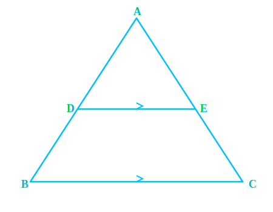
If a line intersects sides AB and AC of a ∆ABC at D and E respectively and is parallel to BC,
prove that ADAB = AEAC.
DE || BC.
ADAB = AEAC
Since DE || BC, by BPT:
ADDB = AEEC
Inverting the relation:
DBAD = ECAE
Adding 1 to both sides:
DBAD + 1 = ECAE + 1
DB + ADAD = EC +
AEAE
ABAD = ACAE
Inverting again:
ADAB = AEAC
Hence Proved.
Example 2
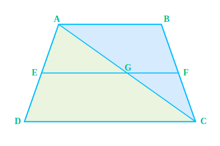
ABCD is a trapezium with AB || DC. E and F are points on non-parallel sides AD and BC
respectively such that EF is parallel to AB. Show that AEED = BFFC.
AB || DC and EF || AB.
AEED = BFFC
Join AC to intersect EF at G.
In ∆ADC, EG || DC (Since EF || AB || DC).
By BPT: AEED = AGGC ...(1)
In ∆CAB, GF || AB.
By BPT: AGGC = BFFC ...(2)
From (1) and (2):
AEED = BFFC
Hence Proved.
Example 3
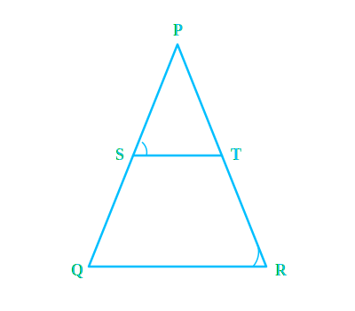
In Fig., PSSQ = PTTR and ∠PST = ∠PRQ. Prove that PQR is an isosceles triangle.
PSSQ = PTTR and ∠PST = ∠PRQ.
∆PQR is isosceles.
Since PSSQ = PTTR, by Converse of BPT: ST || QR.
Therefore, ∠PST = ∠PQR (Corresponding Angles).
But given ∠PST = ∠PRQ.
So, ∠PQR = ∠PRQ.
Sides opposite to equal angles are equal, so PQ = PR.
Since two sides are equal, ∆PQR is isosceles.
Hence Proved.
Example 4
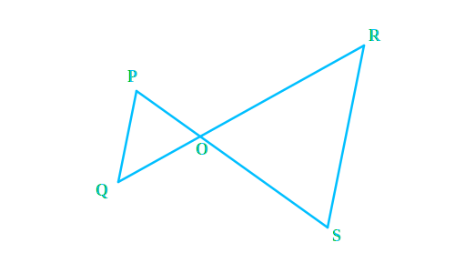
In Fig., if PQ || RS, prove that ∆POQ ~ ∆SOR.
PQ || RS.
∆POQ ~ ∆SOR.
In ∆POQ and ∆SOR:
1. ∠P = ∠S (Alternate Interior Angles as PQ || RS)
2. ∠Q = ∠R (Alternate Interior Angles as PQ || RS)
3. ∠POQ = ∠SOR (Vertically Opposite Angles)
By AAA Similarity Criterion (AAA Similarity):
∆POQ ~ ∆SOR
Hence Proved.
Example 5
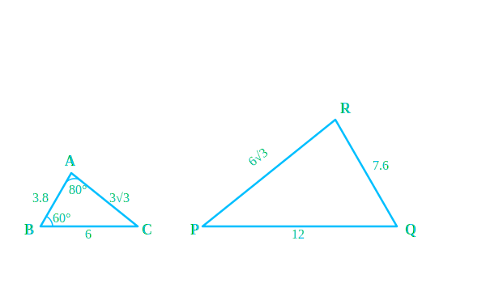
Observe Fig. and then find ∠P.
∆ABC with A=80°, B=60°. AB=3.8, BC=6, AC=3√3.
∆RPQ with R=?, P=?, Q=?. PR=6√3, PQ=12, RQ=7.6.
Value of ∠P.
Compare ratios of sides:
ABRQ = 3.87.6 = 12
BCQP = 612 = 12
CAPR = 3√36√3 = 12
Since sides are proportional, ∆ABC ~ ∆RQP (SSS Similarity).
Therefore, corresponding angles are equal: ∠C = ∠P.
In ∆ABC, ∠C = 180° - (∠A + ∠B) = 180° - (80° + 60°) = 180° - 140° = 40°.
So, ∠P = 40°.
∠P = 40°.
Example 6
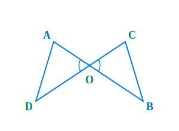
In Fig., OA . OB = OC . OD. Show that ∠A = ∠C and ∠B = ∠D.
OA . OB = OC . OD
∠A = ∠C and ∠B = ∠D.
Rearranging the given equation:
OAOC = ODOB
In ∆AOD and ∆COB:
∠AOD = ∠COB (Vertically Opposite Angles)
Sides containing these angles are proportional (from above).
By SAS Similarity Criterion (SAS Similarity):
∆AOD ~ ∆COB
Corresponding angles are equal:
∠A = ∠C and ∠D = ∠B.
Hence Proved.
Example 7
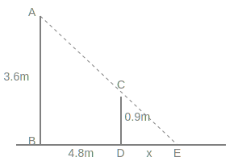
A girl of height 90 cm is walking away from the base of a lamp-post at a speed of 1.2 m/s. If
the lamp is 3.6 m above the ground, find the length of her shadow after 4 seconds.
Height of girl (CD) = 90 cm = 0.9 m.
Height of lamp (AB) = 3.6 m.
Speed = 1.2 m/s. Time = 4 s.
Length of her shadow (DE = x).
Distance covered (BD) = Speed × Time = 1.2 × 4 = 4.8 m.
In ∆ABE and ∆CDE:
∠B = ∠D = 90° (Vertical poles).
∠E is common.
So ∆ABE ~ ∆CDE (AA Similarity).
Therefore, BEDE = ABCD
4.8 + xx = 3.60.9 = 4
4.8 + x = 4x
3x = 4.8
x = 1.6 m.
Length of her shadow is 1.6 m.
Example 8
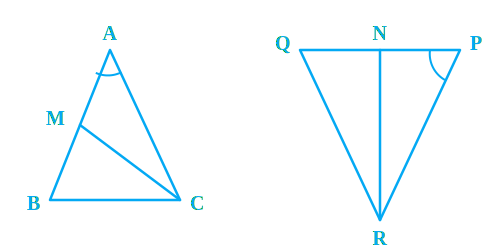
CM and RN are respectively the medians of ∆ABC and ∆PQR. If ∆ABC ~ ∆PQR, prove that:
(i) ∆AMC ~ ∆PNR
(ii) CM/RN = AB/PQ
(iii) ∆CMB ~ ∆RNQ
∆ABC ~ ∆PQR. CM and RN are medians.
(i) ∆AMC ~ ∆PNR, (ii) CMRN = ABPQ, (iii) ∆CMB ~ ∆RNQ.
Since ∆ABC ~ ∆PQR:
ABPQ = BCQR = ACPR and ∠A = ∠P, ∠B = ∠Q, ∠C = ∠R.
Since M and N are midpoints: 2AM = AB and 2PN = PQ.
So 2AM2PN = ACPR ⇒ AMPN = ACPR.
In ∆AMC and ∆PNR:
AMPN = ACPR
∠A = ∠P (Given)
So ∆AMC ~ ∆PNR (SAS Similarity).
Hence CMRN = ACPR = ABPQ.
Similarly, for (iii), we can prove ∆CMB ~ ∆RNQ using SAS (BM/QN = BC/QR and ∠B=∠Q).
Hence Proved.